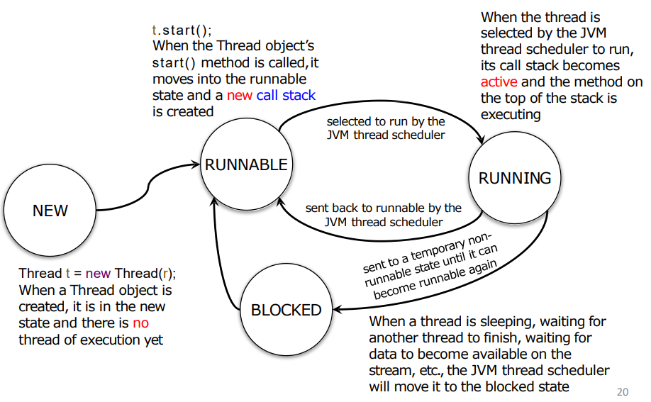
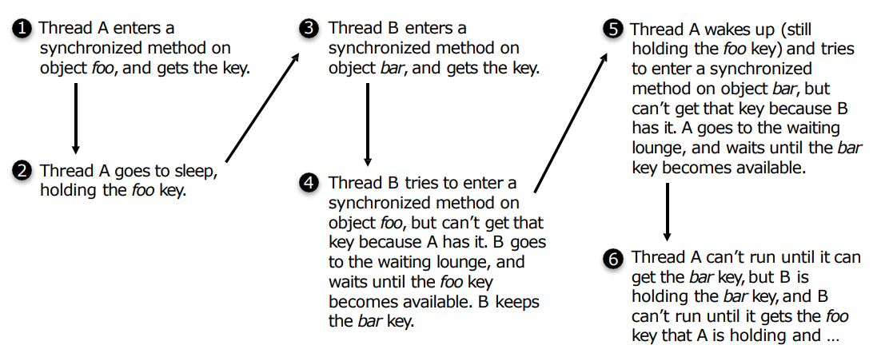

初探 Networking & Multi-threading
一定不要混淆并发 (concurrency) 与并行 (parallelism) 这两个概念！
- concurrency. single-core CPU, multi-threading.
- parallelism. multi-core CPU, multi-processing.
该怎么去形容才最贴切？假设某政府机构经常被反映排队时间过长，那么提高柜台效率的方法有两种：
- 并发式：根据不同业务的特点安排办理顺序 (thread scheduler)，提高单个柜台的效率。
- 并行式：增加柜台数量。
这是 COMP2396 Java & OOP 课程的最后一章，因此 network 与 multi-threading 都是基于 Java 实现的。
This article is a self-administered course note.
It will NOT cover any exam or assignment related content.
Networking
Networking 可以被描述为 client-side application 与 server-side application 间的数据交换。在一个简单的 client-server model 中，一个 server 可以与多个 clients 建立连接。
Client-side Application
一个简单的 client-side application 需要实现：
- establish initial connection between the client and server. [Socket]
- send messages to the server. [Socket]
- receive messages from the server. [Socket]
- send outgoing messages to and simultaneously receive incoming messages from other clients via the server [Multi-threading]
我们使用 Socket 建立 client 与 server application 之间的连接。该连接是 client 向 server 发起的，因此需要提供 server application 的 IP address 与 TCP port number。
1 | // establish a Socket connection |
Server-side Application
一个简单的 server-side application 需要实现：
- establish initial connection between the client and server. [Socket]
- send messages to the server. [Socket]
- receive messages from the server. [Socket]
- simultaneously handle incoming connections from other clients [Multi-threading]
1 | try { |
注意这里的 while(true)：server application
必须要通过无限循环持续监听端口的 incoming
connection，这其实一定程度上说明了 concurrency 的本质：one task being
handled at one time.
有没有联想到 JavaScript 中的 event listener？它的作用与 ServerSocket 很相似，但并不需要显式的无限循环。这是因为 JavaScript 是一种事件驱动 (event-driven) 的语言，它的 runtime environment 已经替我们处理好了 event loop 相关的部分。
Launching a New Thread
上一节中的 client-side 与 server-side applications 有两个重要的限制：
- client-side: CANNOT send and receive messages to and from the server simultanesouly.
- server-side: CANNOT handle multiple clients simultaneously.
我们引入 multi-threading 机制，即 a single application 中 multiple threads 的 concurrent execution。
Java 是一种 thread-based language，能够很方便的实现 multi-threading。创建新 thread 三部曲：
1 | // 1. Make a Runnable object (the thread's job) |
Runnable 对象可以说是 Thread 对象的 worker；Runnable 接口要求类实现
run() 方法。
1 | public interface Runnable { |
调用 Thread 对象的 start() 方法将开启一段 new thread of
execution，与之同时，对应的 Runnable 对象的 run()
方法被压入 new thread stack 的底部。
Thread Scheduler
一个 thread 的生命状态有五种：
- NEW.
Thread t = new Thread(r) - RUNNABLE.
t.start()后进入 RUNNABLE 状态，创建一个新的 call stack。 - RUNNING. thread 当前正在被执行。
- BLOCKED. 当 thread 休眠时进入阻塞状态。

在 multi-threading 机制下，Java 内置的 thread scheduler 将决定：
- 将哪些 thread 从 RUNNABLE 设置为 RUNNING。
- 在什么情况下一个 RUNNING thread 将离开 RUNNING 状态。
- 离开 RUNNING 状态后 thread 将进入什么状态 (BLOCKED? RUNNABLE?)。
这一切都是由 thread scheduler 决定的，与程序的正确性无关。因此，对于下面这个程序：
1 | public class MyRunnable implements Runnable { |
当 myThread 的 start()
方法被调用后，程序中产生了两个独立的 threads 和对应的 call stacks：main
thread 与 myThread thread， 且他们都处于 RUNNABLE 或
RUNNING 状态。
如何安排它们运行的顺序全由 thread scheduler
决定：因此程序的输出是不确定的。调用 start() 后，thread
scheduler 将把 main 设置为 RUNNABLE，这样 myThread 能够进入
RUNNING 状态。
- 在
myThread运行到doMore()函数前，thread schedular 决定将其转为 RUNNABLE 状态，接着将 main 转为 RUNNING 状态。这样程序的输出为先back in main后top of the stack。 - thread scheduler 持续运行
myThread直到其结束。此时myThread消失，程序只剩下 main。于是 main 重新进入 RUNNING 状态，这样程序的输出为先top of the stack后back in main。
程序员仅能通过两种方式间接影响 thread 的状态。
start()使 thread 从 NEW 转为 RUNNABLE。sleep()使 thread 由 RUNNING 转为 BLOCKED。当其醒来后自动进入 RUNNABLE。
1 | try { |
Cocurrency Problem
见下例，若两人访问同一个银行账户，并且由发起提款请求到完成提款有一定时间间隔，cocurrency problem 很有可能会发生，具体表现在银行账户被 overdrawn。
BackAccount 类：
1 | public class BackAccount { |
SmithJob 类 (Mr.Smith 与 Mrs.Smith 都要完成提款任务)
1 | public class SmithJob implements Runnable { |
mrSmith 与 mrsSmith 这两个 threads
访问同一个对象 account 造成的 race condition
(提款之前的判断语句失效) 导致了 data corruption (银行账户出现
overdrawn)，是一个典型的 concurrency problem。
Synchronization & Object's lock
解决 concurrency problem 的一个途径是定义 synchronized 方法。
1 | private synchronized void makeWithdrawal(int amount) { |
synchronized 关键字保证该方法
(更准确的说，是定义该方法的对象) 在同一时间只能被同一个 thread
访问。我们把这样的方法称作 atomic (或 synchronized) method。
Synchronization 与 Java 中的对象锁 (object's lock) 概念密切相关。
- Most of time, the lock is unlocked.
- It locks when synchronized methods are defined.
- Even if an object has more than 1 synchronized method, there is still only 1 key. Therefore an object with synchronized methods CANNOT be accessed by multiple threads at the same time.
Deadlock problem

Java 没有侦测与处理死锁问题的机制，因此避免死锁问题的唯一方法是 design carefully。
Reference
This article is a self-administered course note.
References in the article are from corresponding course materials if not specified.
Course info. Code: COMP2396, Lecturer: Dr. T.M. Chim.